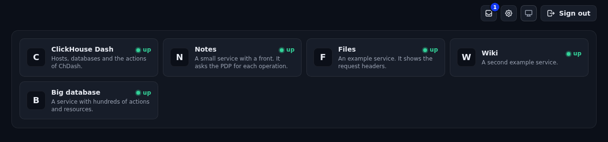

The launcher page
The launcher (/) shows one row for each group and one tile for each service. It shows only the services that the viewer can open. The superadmin sees every service.
- The tiles of a group sort by
portal.weight, then by name. - The rows sort by the lowest weight of their services, then by the name of the group.
- The tile shows the name, the description, the icon and the state word of the service.
- The key
ui.services_new_tab(defaulttrue) sets whether a tile opens its service in a new browser tab. The value applies to every service. - The icon comes from the offline icon library of the portal. The library has three SVG sets:
di(colour logos of services),si(monochrome brand glyphs) andtb(generic interface icons). The portal never loads an icon from the internet. - A label names an icon in one of the forms
notes,docker.png,si-grafanaortb:server. The portal searches a bare name indi, then insi, then intb. - A service with no icon in the library shows the first letter of its name.
- The title of the page is the value of
server.name.
Discovery sources
Two sources give the services. Both are optional.
| Source | Key | What the portal reads |
|---|---|---|
| Docker (Compose, Swarm) | discovery.docker_socket | The labels and the state of the containers, from the Docker socket. Without this key, the source is off. |
| Kubernetes (Traefik) | discovery.kubernetes | The annotations of the Traefik IngressRoutes, and the pods, from the Kubernetes API. The portal needs get and list on ingressroutes and on pods. |
- The portal reads the sources every
discovery.interval(default 15 seconds). - A health probe or a source request waits
discovery.probe_timeout(default 3 seconds). - The portal probes at most 64 services at the same time.
- A source that fails keeps its last good answer. The portal adds a problem message that only the superadmin sees.
- A container that restarts can be absent from a list for a moment, while Traefik still routes it. The gate keeps the last owner of its path for 20 rounds, which is 5 minutes at the default interval. In this time, only the people who may open the service, and the superadmin, pass its path.
- Two services with the same id keep the first one in the list. The path of the other
hrefstays closed in the gate, because Traefik still routes it. - The health probe sends one
GETand reads no body. It follows no redirect and does not verify the certificate of an https URL. A status below 500 means up. A status of 500 or more, a refused connection or a time-out means down. - The portal reads the action documents and the option lists with a verified client. It checks the certificate and the host name of an https URL, and follows no redirect.
Labels of a service
A service declares itself with labels (Docker Compose container labels) or annotations (Kubernetes IngressRoute). The prefix is portal.. The same names work in both runtimes.
The portal also reads the homepage.* labels and the gethomepage.dev/* annotations. A portal.* value wins. The labels portal.id, portal.actions and portal.exclude have no Homepage form. The Homepage name of portal.pods is gethomepage.dev/pod-selector.
| Label | Use |
|---|---|
portal.enabled | true lists the service. false hides it, and the gate keeps the path of its href closed: only the superadmin passes. A portal.name also lists it. |
portal.id | The id of the service. It is the audience of its identity tokens and the resource id of its grants. The default is the slug of the group and the name. The id portal is reserved for the internal scope of the portal features. An id has 64 characters at most. |
portal.name | The display name. It has no control character. The portal cuts it at 160 characters. |
portal.group | The group of the row. The default is Other. It has no control character and 160 characters at most. |
portal.href | Mandatory. A path or an http(s) URL. The service owns the longest path prefix (see The gate). A path with a broken percent escape or a \ is not usable. An escape of /, of a control character or of bytes that are not UTF-8 is not usable either. |
portal.description, portal.icon | The text and the icon of the tile. The text has no control character and 160 characters at most. |
portal.weight | An integer. The tiles sort by weight, then by name. The default is 0. |
portal.health | An http(s) URL for the health probe. The Homepage label siteMonitor gives the same value. |
portal.pods | Kubernetes only. A selector of the pods of the namespace of the IngressRoute. The ready pods give the health. The selector holds key=value pairs, or a bare key, with commas between them. |
portal.actions | The URL of the action document. The default is the origin of portal.health and the path /.well-known/procurauth/actions. See Actions of the services. |
portal.exclude | The paths open without a session, at most 8 rules. See Paths open without a session. |
A workload lists itself in one of these ways. The label portal.enabled is true. Or the label portal.name has a value. For the Homepage labels, a Docker container needs homepage.name, and a Kubernetes IngressRoute needs gethomepage.dev/enabled set to true.
A label that is not usable keeps the service out of the launcher. The Services page names the problem.
State of a service
The portal finds two states for each service:
- The health state: up or down. A declared
portal.healthURL gives it (HTTP probe). Otherwise, the runtime gives it: the state of the container (Docker), or the number of ready pods ofportal.pods(Kubernetes). One ready pod means up. A stopped container is down. - The runtime health:
healthy,unhealthyorstarting. The health check of the runtime gives it, when the runtime has one. It adds detail to the health state. It does not change it. The metricportal_catalog_services_downcounts only the health state.
Each tile shows one state word. The word always tells the state, so the colour is never the only sign.
| Word | What it tells | Look |
|---|---|---|
down | The health state is down. This word has priority over the runtime health. | Red pill. The whole tile is red. |
unhealthy | The health check of the runtime fails. | Warning pill. |
starting | The health check of the runtime has not passed yet. | Neutral pill. |
healthy | The health check of the runtime passes. | Green dot, the same as up. |
up | The health state is up. The runtime has no health check for the service. | Green dot. |
| no word | No check applies, or no check has answered yet. | None. |
The runtime health for each runtime:
- Docker and Compose. The result of the
HEALTHCHECKof the container. The portal reads it from the list of the containers, the same request as the labels.- A recent Engine API gives the member
Health.Status. - An older API gives the end of the
Statustext:(healthy),(unhealthy)or(health: starting). - A container without
HEALTHCHECKhas no runtime health. A stopped container has no runtime health. - A
portal.healthURL does not remove the runtime health.
- A recent Engine API gives the member
- Swarm. The same rules apply. A task container gets a new name for each task. The portal uses the label
com.docker.swarm.service.nameas the origin when the labelcom.docker.compose.serviceis not there. Thus the origin of the service does not change from one task to the next. - Kubernetes. The readiness probes of the containers of the pods of
portal.pods. The portal reads them from the same pod list as the number of ready pods. This list holds the spec and the status of each pod. Thus the runtime health needs no other request and no other RBAC verb:getandlistonpodsare sufficient.
The rules for the pods:
- The portal uses only the pods that have a container with a readiness probe. A pod with a deletion time (
Terminating) does not count. Without such a pod, the service has no runtime health. - A ready pod is
healthy. - A pod that is not ready is
startingwhen its phase isPending, when a container hasstartedatfalse, or when a container waits. - A container that waits with a reason other than
ContainerCreatingorPodInitializingmakes its pod unhealthy.CrashLoopBackOffis an example. Another pod that is not ready is unhealthy. - One
unhealthypod makes the serviceunhealthy. The service isstartingwhen a pod isstartingand no probed pod is ready. Otherwise, the service ishealthy. - With a
portal.healthURL, the portal does not read the pods. The service then has no runtime health.
Group heads
Each row has a head. The head shows the name of the group and the number of services. It also shows the badges N down (red) and N unhealthy (warning).
When the viewer sees one group only, the head gives no useful data. The launcher then does not show it, unless the group has a down or an unhealthy service. The row keeps the name of the group as its accessible name. With two groups or more, each row has its head.
External services
An external service is a tile that opens a link. It has a name, a link, a description and an icon. It needs no container and no IngressRoute. The tile is all that it has.
Sources and form
- Sources. The file gives a service with a block
external_service "<name>". The superadmin can also add a service on the Services page, and the database then keeps it. The server reads the blocks of the file at start. A change of a block needs a restart. - Add. The button Add external service is on the Services page. It opens a form with the fields Name, Link, Description and Icon. The last two fields are optional.
- Who can add. The button and the route
POST /auth/services/addexist only when the grants can change:access.grants_modeis notstatic. Only the superadmin in its own right adds or deletes a service. - Form checks. The form has the anti-CSRF token and the origin check, as the forms of the accounts have. It removes the spaces around the name, the link, the description and the icon. It refuses a value that the rules below refuse, and it shows a notice. An unknown field gives
400. - Body of the form. The form reads a body of
server.max_body_bytesplus 144 KiB for the icon. The check of the session comes before the body. - Limit. The database keeps 256 external services at most. The file has 256 blocks at most.
Link, name, id and description
- Link. The link is arbitrary, but it is always absolute and its host is valid. It is an
httporhttpsURL of 1 to 2048 bytes, with the scheme in lower case. The path, the query and the fragment are free. The link has no user information (user:password@), no space, no control character and no backslash. The portal never requests the link. - Host and port. The host is a DNS name, an IPv4 address, or an IPv6 address in square brackets. A DNS name has ASCII labels of RFC 1123: 1 to 63 letters, digits and hyphens, with no hyphen at the start or at the end. The whole name has 253 characters at most. A name with a non-ASCII letter is refused: write its
xn--form. - IPv4 and port. A host of digits and dots must be an IPv4 address of four numbers from 0 to 255, so
1.2.3is refused. The port is a number from 1 to 65535, with no zero at its start. - One rule. The rule of the link applies to the file, to the form and to each row of the database. A bad link in a block of the file stops the start. The error names the block, the key and the value. A bad row of the database stops the start, and the error names the id of the row. The portal does not delete the row: fix or delete it, then start again.
- No change. The file and the database keep the link as it is. A space in the link is an error there. The form is the one place that removes the spaces around the link.
- Name. The name has 1 to 32 characters, with no control character and at least one letter or digit. In the file, the name is the label of the block, and it has no space at its start or at its end.
- Id. The id is
ext-and the slug of the name: "Team wiki" givesext-team-wiki. The id is the resource id of the grantaccesson the service. Two names with the same slug have the same id: two blocks stop the start, and the form refuses the second name. The portal never adds a number to an id. - Description. The description is optional text of 200 characters at most, with no control character. The tile shows it under the name. The Services page shows it in the panel of the service. An empty description shows nothing.
Icon
- Storage. The portal stores the image and serves it itself. It never loads an image from another host. The image is a PNG, a JPEG, a WebP, a GIF or an SVG. It has 32 KiB at most after it is decoded.
- Type. The portal finds the type from the bytes (the magic numbers). A declared type that does not match the bytes is refused.
- SVG. The portal refuses an SVG with a
<script, an event attribute (on...=), a<foreignObject, ajavascript:link or an<!ENTITY. It also refuses a<!DOCTYPEwith an internal subset. Eachhref,xlink:hrefandurl(must start with#. An external reference is refused. - In the file. The file gives the icon as a data URI (
icon = "data:image/png;base64,...") or as the path of an image file (icon_path). Give at most one of the two. The keyicon_pathis not the_fileform oficon, on purpose. The_fileform removes the last line end, and the bytes of an image must stay exact. - In the form. The form has a text field for a data URI. A script on the page adds a file input that fills the field from a chosen file. The page works without the script. The server checks the field again.
- Route. The icon comes from
GET /auth/ext-icon/<id>on the same origin. The route answers a session that may open the service, and nobody else. Any other request gets the answer of an unknown path. The page shows the icon in animgelement and never inline, so an SVG cannot run a script. The policyimg-srcof the pages does not change. - Headers. The answer has the type of the bytes and
X-Content-Type-Options: nosniff. It hasContent-Security-Policy: default-src 'none'; style-src 'unsafe-inline'; sandboxandCache-Control: private, no-cache. It has a strongETag. A request withIf-None-Matchgets304.
Tile and permission
- Tile. The group is always
External, and it is the last row of the launcher. The tile has no state word. It shows the own icon. Without an own icon, it shows the icon of the library that has the name of the service. Without this icon, it shows the first letter of the name. - Badge. The tile shows the badge
external. The tile opens the absolute URL. The keyui.services_new_tabapplies to it as to the other tiles. - Permission. The only permission is the grant
access. It shows the tile of the service to its holder. The superadmin sees every tile. A new account sees none. A blockusergivesaccessonservice:ext-<slug>as it does for any service. - Forms of grants. The page of an account and the page "New user" show the service with the badge and the switch Open. They show no list of actions. The portal refuses each other grant on an external service. This applies to each form: the page of an account, "New user", and the forms of the keys.
- No protection. The portal does not authenticate the access to the link. Anyone who knows the address can open it. The grant only shows or hides the tile. The Services page and the badge say so: "External link. This server does not protect it."
- Keys. A key never holds a right on an external service. The forms of the keys do not offer it, and they refuse a grant that names it.
- Never a client. An external service has no action document, no identity token, no PDP question and no health probe. The portal never requests the link, so it cannot reach a host by this way.
- No path. An external service owns no path of the gate, also when its link points to the host of the portal. It cannot hide, shadow or open the path of another service. The grant
accesson it opens no path.
File, database and several instances
- File and database. A service of the file and a row of the database can have the same id. The service of the file wins, and the portal ignores the row. It does not delete the row. The Services page shows the service of the file with the badge
file. The page has no trash icon for it, and the route of the delete refuses it. - Same id as a discovered service. A service that discovery lists with the same id wins over both. The external service then has no tile. The Services page and the launcher of the superadmin show a problem. Delete the row, or remove or rename the block.
- Delete. The trash icon in the head of the panel deletes the service and each grant that names its id, in one transaction. If an account opens the service, the confirmation asks for the name first. A service of the file has no trash icon.
- Several instances. The database keeps the rows. Each instance reads them with the directory, in the next round (a few seconds), and it merges them into its catalogue. A restart is not necessary. Each instance reads its own file, so give every instance the same blocks.
- History. An add and a delete write the audit events
external_addedandexternal_deleted. The id of the service is in the field of the account. The tab Activity shows "External service added" and "External service deleted". The metricportal_user_admin_totalcounts the actionsexternal_addandexternal_delete. - File checks. The start refuses a block
userthat gives an external service any grant other thanaccesson the whole service. It refuses a blockkeythat names an external service. It refuses a blockpdp_clientthat has the id of an external service as its name. The error names the block and the grant. - Checks across sources. The start applies the file checks to the ids of the file and to the ids of the database. It also checks each row of the database against the rules above, also a row that a service of the file hides.
Example
An external service with the name Team wiki and an icon from a file:
external_service "Team wiki" { href = "https://wiki.example.org/start?lang=en" description = "The wiki of the team" icon_path = "/run/secrets/wiki_icon.svg" # or: icon = "data:image/svg+xml;base64,..."}user "carol" { grants = ["access on service:ext-team-wiki"]}See Configuration for each key of the blocks discovery, ui and external_service.
Source of this page: docs/launcher.md.